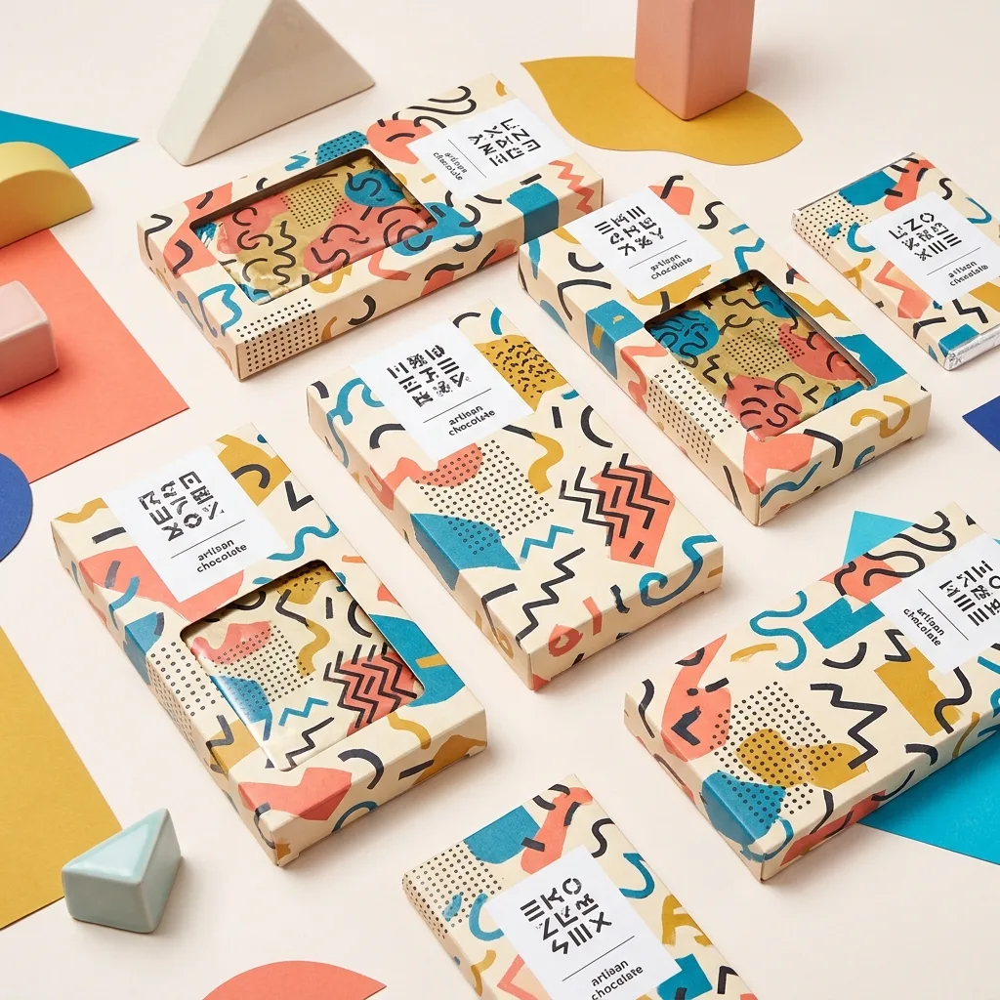

品牌識別包裝設計
FIZZ POP 氣泡果汁
挑戰｜市場上的氣泡飲都長得差不多,新品牌如何在便利商店的冰櫃裡被一眼認出?
解法｜我們以高彩度撞色與幾何泡泡圖形打造識別,讓每個口味有自己的顏色語言,並延伸到杯身、貼紙與社群。
成果｜上市三個月鋪進 120 間通路,社群開箱自然擴散,品牌記憶度測試領先同類競品。
我們挑了三個最能代表波克風格的專案。它們橫跨飲料、活動與食品,但都共享同一個目標:在最短的時間內,被看見、被喜歡、被記住。
挑戰｜市場上的氣泡飲都長得差不多,新品牌如何在便利商店的冰櫃裡被一眼認出?
解法｜我們以高彩度撞色與幾何泡泡圖形打造識別,讓每個口味有自己的顏色語言,並延伸到杯身、貼紙與社群。
成果｜上市三個月鋪進 120 間通路,社群開箱自然擴散,品牌記憶度測試領先同類競品。

挑戰｜一個全新的音樂節,需要在沒有卡司光環下,光靠視覺就讓人想買票。
解法｜我們設計一套可無限重組的幾何「節奏」圖形系統,從主視覺延展到動態識別、票券與週邊。
成果｜售票首週完售,主視覺被樂迷大量二創,成為城市夏天的記憶符號。

挑戰｜精品手作巧克力常給人嚴肅高冷的印象,品牌想要更年輕、更想送禮的感覺。
解法｜我們用積木概念設計可拼接的幾何包裝,不同口味像積木一樣能組合成禮盒,鮮明又好拍。
成果｜情人節禮盒檔期銷量成長 2.4 倍,成為品牌最受歡迎的明星包裝。
橫跨飲食、零售、文化與科技,從第一個標誌到下一個十年。